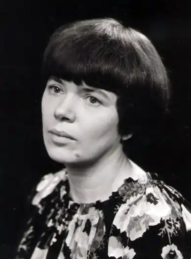
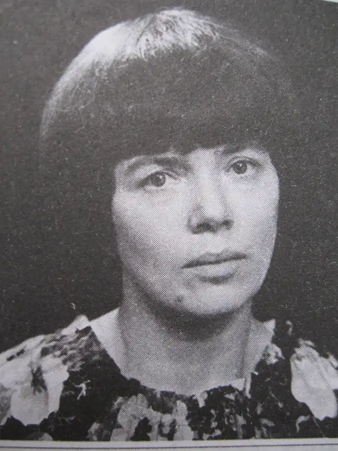

Оксана Павлівна Сенатович народилася 2 січня 1941 року у славному галицькому місті Бережани Тернопільської області. Батьки майбутньої письменниці, Павло Зенонович Сенатович і Марта Сигізмундівна Орнатовська, були сільськими вчителями, тож змалечку прищепили донечці любов до рідного слова. Маленька Саня (так пестливо батьки називали свою одиначку) ще в початкових класах загальноосвітньої школи знала напам’ять силу-силенну віршів, а сама почала віршувати вже у середніх класах. До закінчення школи, з відмінним атестатом і золотою медаллю, Оксана вже мала чималий поетичний доробок, який складався із доброго десятка грубих зошитів, всуціль помережаних віршами. Навчаючись у Львівському політехнічному інституті, поетеса дебютувала добіркою віршів у збірнику "Яблуневий цвіт" (1961). Також відвідувала літературну студію при інституті, керівником якої був Микола Петренко. Одного разу на чергове засідання літстудійців завітав друг керівника студії Володимир Лучук, де познайомився з цікавою дівчиною із полум'яною душею, яка згодом стала його дружиною.
Відтоді біографія Оксани Павлівни нерозривно пов’язана зі Львовом. Вона працювала інженером на заводі, в науково-дослідному інституті легкої промисловості, була на профспілковій роботі в Будинку технічної творчості молоді та юнацтва, за що її нагородили медаллю імені А. Макаренка. Колишня випускниця технічного вузу стала професійним літератором, поетом та перекладачем. У 1968 р. вийшла друком перша поетична книжка Оксани Сенатович — "Стебло", за нею — "Діапазон весни", "Голубий голос", "Чоловік з трояндою". Це, так би мовити, "дорослі" збірки, які засвідчують те, що поетична творчість Оксани Сенатович вирізняється самобутнім ліричним голосом з іронічними нотками і специфікою тематики. Проте, найяскравіше розвинувся талант письменниці у поезії для дітей. Перший її вірш для дітей "Дорога" був надрукований у "Барвінку" ще в 1969 році й відразу сподобався широкій аудиторії. Він поповнив усі збірки, читанки, перекладався різними мовами. Потім побачили світ збірки: "Червоні лелеки" (1970), "Вісім сотень колобків" (1972), "Вчиться вересень читати" (1977), "Сніговик" (1981), "Живемо в одному домі" (1983), "Шпаки на колесах" (1989), "Соловейку, тьох-мажор!" (1990), "У краєзнавчому музеї: Азбука для Левка" (1992). У 1991 році до півстолітнього ювілею Оксани Сенатович вийшла збірка вибраного під уже відомою назвою "Вчиться вересень читати", куди увійшов також оновлений варіант повісті "Не виростуть хлопці без дощу". У 1976 році Оксана Павлівна Сенатович стала членом Спілки письменників України. В останній рік свого земного життя вона написала ще дві повісті для дітей. Перша — "Пані Будьласка і вуйко Пампулько" була надрукована у журналі "Соняшник" у 2000 р., а 2007 р. вийшла окремим виданням. Фрагменти іншої повісті "Про Люлька Смока і Котів — місто чудес(не)" були надруковані в газеті "Діти Марії" (головним редактором Оксана Павлівна тут працювала з 1993 по 1997 рр.), а повністю — у журналі "Педагогічна думка" (2007, № 1). Оксана Павлівна перекладала з багатьох слов’янських мов. Окремим виданням вийшла збірка перекладів віршів сербського поета Йована Йовановича-Змая "Малий велетень" (1986). Ще на початку дев’яностих років була готова до друку антологія сербської поезії для дітей "Кошеня в кишені" у переспівах Оксани Сенатович, але до цього часу вона так і не надрукована. За свій літературний доробок для дітей Оксана Сенатович стала першим лауреатом премії імені Олени Пчілки (1992), а в 1995 р. — лауреатом Тернопільської обласної літературно-мистецької премії імені Іванни Блажкевич за збірку поезії для дітей "Вчиться вересень читати", поему "Сад Іванни Блажкевич" та спогади про І. Блажкевич. Окремі твори письменниці перекладено понад десятьма мовами. Оригінальний доробок Оксани Сенатович заслужено увійшов до золотого фонду української літератури для дітей. Двоє синів Оксани Павлівни — Тарас та Іван — нині також займаються літературною творчістю. Важко знайти такий збірник, читанку чи хрестоматію із творами української літератури для дітей, де б не було віршів Оксани Сенатович. Вони особливо добрі і щирі, саме такі, які може розповідати любляча матуся. В них поетеса сміливо говорить з дітьми про серйозні речі, з мудрими і щирими словами звертається до найменшого читача. Є у її віршах також елементи гри, і тому вони так легко запам'ятовуються. Померла письменниця 31 березня 1997 року у Львові. Похована на Личаківському цвинтарі поруч зі своїм чоловіком, поетом Володимиром Лучуком (1934 — 1992). Оксана Павлівна вважала себе вічною мандрівницею, хоча насправді мандрувала небагато. Своїми подорожами вона ділилася з малечею рядками поезії: "…як у світ виходять вікна, як заходять двері в хату — так мені з моїм дитинством: ні ввійти, ні вийти з нього".